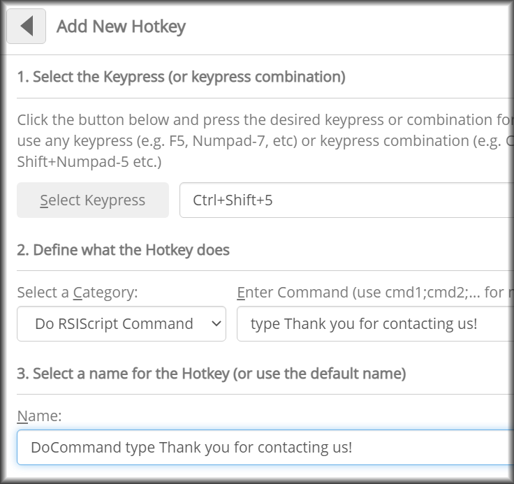
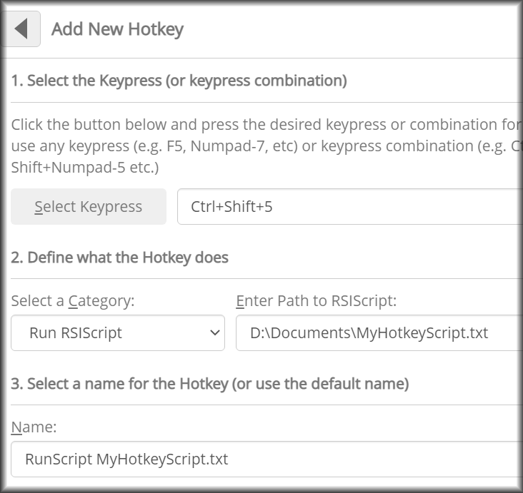
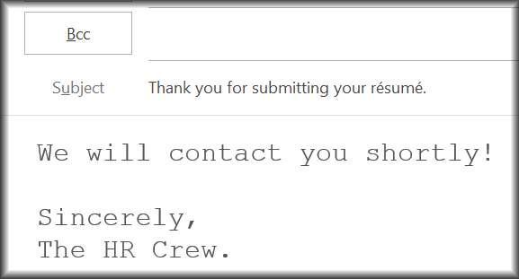
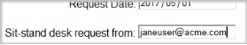

KeyControl lets you to assign many standard functions (e.g. open a web page, double-click, type standard text) to a hotkey. This make performing these functions faster and easier – and that’s good both for health and productivity.
But, if you want to get even more out of KeyControl, you can also make hotkeys that perform complex and/or multi-step processes. This can be done using RSIGuard’s built in scripting language, RSIScript.
This document provides examples of common activities you might want to assign to a hotkey that require using RSIScript.
These examples are just a taste! RSIScript is very flexible, and almost any repetitive process you do can be automated. Click here to explore the RSIScript language.
For each example, when you create a new hotkey, Select one of these 2 categories:


The following steps explain how to implement the examples in this document.
Visit the KeyControl help for more information.
If you type certain text repetitively (e.g. an address, a phrase you commonly use in emails, etc.) then you may want to assign that text to a hotkey. Although the basic “Add a Hotkey” feature allows you to do this with basic text, using RSIScript allows you to do more complex typing. Here is an example:
# type when the request was received (use current date)
type Your Sit-stand desk request was received on $DateStr(%A %B %d).<enter>
# turnaround time is 2 weeks, so type that too
type You should receive your desk by $DateStr(%A %B %d,$Date(14)).<enter>
This would type something like the following into your active email/document:
Sit-stand desk request was received on Monday May 08.
You should receive your desk by Monday May 22.
Note that lines starting with '#' are documentation notes that RSIScript ignores. The type command simulates typing on your keyboard. You can type regular text, or do any special keyboard presses (like pressing Enter, or the Left Arrow).
This next example could be used to type non-English characters in an email Subject (e.g., 'Thank you for submitting your résumé.') and then tab to the body of the message. You can do this all in 1 'type' command, or split it up into several.
# type a Subject, then tab to the body.
type Thank you for submitting your r<ctrl'>esum<ctrl'>e.
type <tab>
type We will contact you shortly!<enter><enter>Sincerely,<enter>The HR Crew.

In this example, imagine you are tabbed to a field in some software where a user’s email address is displayed:

In this example, imagine it's a system where a user requests a sit/stand desk.
We want to send an email to the user letting them know their request was approved or denied, and inform facilities as well. Here's a possible script to do it:
# select the email address by pressing Ctrl+A
type <ctrla>
# copy the email address by pressing Ctrl+C
type <ctrlc>
# use 'mail' command to start building a new email – begin by specifying CC address (to facilities)
mail cc facilities@acme.com
# specify which of 2 subjects (approved or denied) to use by querying user (the word Sub
mail subject Your request was $choice(Specify if Approved or Denied,approved,denied)
# open the new email and set the 'To:' address to the email address we copied above
mail sendto $clipboardtext()
#wait a second for email to open
wait 1
#the new email windows starts with cursor in Message area, so let's start typing message
type Thanks for your request. If you need additional information...
type Sincerely, Staff
You can complete a form simply using a typing hotkey (i.e. you don't need an RSIScript hotkey just for typing). For example, say you need to type ‘first name’ and ‘last name’ in adjacent fields, you could simply use a typing hotkey with the text:
Jane<tab>Smith<tab>
This would type ‘Jane’, Tab to the last name field, type ‘Smith’, and then Tab to move the next field.
But let’s say you want to enter different values based on user input and/or the values of fields or dates. This example RSIScript completes a more complex form. Read the comments to follow what it does:
#go to requisition form (this sample form really exists if you want to experiment)
open http://www.rsiguard.com/pp/misc/requisition.htm
#tab to date field (how you do this can vary by browser)
type <tab>
#type request date (today)
type $DateStr(%Y-%m-%d)<tab>
#type requestor's ID (username)
type $u<tab>
#ask user what is being requested and store their answer in variable $1
setvar 1 $choice(Specify requested item,Sit-Stand Desk,Monitor Arm,Petite Chair,Large Chair,Adjustable Keyboard,Small Mouse)
#type first 2 characters of $1 (enough to uniquely identify the entry in the drop-down list)
type $Left($1,2)<tab>
#current field tells calculated turnaround time for requested item - copy it with CTRL+C
type <ctrlc>
#prepare message for submitting request, and warn if turnaround time is over 5 days
setvar 2 $if($greaterthan($clipboardtext(),5),Request for $1 has turnaround time of $clipboardtext() days.) Click this notification to cancel request.
#have user click notification to complete request (activate form, submit it, wait 1 second, close tab)
#The {{ }} is needed because normally the $do() would do the commands in parentheses. This is kind of like putting it in quotes. See RSIScript docs for details.
notice msg FF0000 10 "$1 Request" "Click this notification to complete the request" {{$do(activate Requisition,type <tab><enter>,wait 1,type <ctrl<f4>>)}}
#if user doesn't click notification, they can manually submit it, or just exit the requisition page
You can easily make a hotkey open a single website with KeyControl. But you can also make a hotkey open a set of websites. It can use logic (e.g. day of the week) to open different pages.
#open 2 pages I always need
#only open this last page on Fridays
$if($equal($DateStr(%A),Friday),open http://www.rsiguard.com/pp/misc/friday.htm)
If Internet Explorer is your default browser, the second website may replace the first by opening in the same tab. If you only see the last window, you can use the following:
#open 2 pages, but give IE time between pages
schedule in 1 open http://www.enviance.com
schedule in 2 open http://www.google.com
With “Add a New Hotkey” you can make a hotkey to open an application, e.g. Excel. But a more sophisticated hotkey will open Excel if it’s not already running, or if it is running, activate an already-running instance of Excel.
#get the number of Excel windows that are running
setvar 1 $isrunning(Excel)
#if it's zero, open a new instance
$if($equal($1,0),open Excel)
#otherwise, activate an Excel window
activate Excel
Let’s say you have 10 places you visit often. You could create 10 hotkeys. But that might be hard to remember. An alternative would be to create one hotkey that gives you quick access to the 10 places. Here are 2 strategies:
This hotkey uses a web API call to get the URL for the dashboard, and then opens the dashboard.
#Bring RSIGuard to foreground (use the extra - to help insure you get the RSIGuard application)
activate RSIGuard-
#use the response from an API to get the URL for your dashboard
setvar 1 $api(http://www.rsiguard.com/pp/misc/opendashboard.txt)
#open the dashboard in a 900X900 Window without a separate Close Button
html open "My Dashboard" "" 900 900 $1
RSIGuard can speak specified text using this RSIScript command:
speak text This is a sample of text to speech functionality.
Alternately, you can use the following command to speak all the text you’ve selected.
speak selected
This lets you select text in a document or on a web page and have the computer read it aloud to you. You can actually do this with an 'RSIGuard Functions' hotkey as well.
Although you can create hotkeys in “Add a New Hotkey” to type text or do mouse clicks, sometimes you need to automate a series of mouse and typing events. You can do this using the ‘mouse’ and ‘type’ commands.
For example, this script activates a known application, moves the mouse to a specific location in the application, clicks, and then types text (presumably into some field).
#activate the application of choice
activate ACMEApp
#move to a specific location within the application
mouse absmove client 400 300
#click the mouse (e.g. to activate a field)
mouse click
#type some text in that field
type Hello
Often the processes we want to automate require locating a button or image on the screen that isn’t in a fixed location. Or, the process might require figuring out what to do next based on the presence of some visual indicator.
RSIGuard’s scripting language contains a basic visual recognition tool to find graphical objects on the screen. This could be used in the previous example if the field you wanted to type into wasn’t necessarily always at the same coordinates.
This is complex functionality, and this documentation only provides a basic example. Creating hotkeys to automate tasks using this functionality may require Cority support or an experienced software engineer.
The most basic usage of this functionality starts with creating a BMP image file of a very small part of the object you want to find. For example, say you want to click on the Send button in an email application. You might create a BMP of a portion of the Send button like: (The image to be found must match in size exactly the BMP snippet you create.)
Then, in RSIScript, you use an expression like:
setvar 1 $findimg(c:\MyImages\SendButton.bmp,curwnd)
The variable $1 will now either equal '0' if the image wasn’t found, or coordinates (e.g. '400 300') if it was. You can use a command like the following to move the mouse to the button:
#if $1 is non-zero, move mouse to coordinates $1 specifies
$if($1,mouse absmove screen $1)
Scrolling via a mouse wheel can create awkward postures, so it's nice to sometimes use a hotkey to scroll up/down.
The RSIScript to scroll down is 'scroll down', and up is 'scroll up'. You can add a number of lines to scroll, such as 'scroll down 5'.
You could assign 'scroll up/down 3' to Ctrl+[ and Ctrl+' (apostrophe). Then assign 'scroll up/down 20' to Ctrl+Shift+[ and Ctrl+Shift+' to have the option of pressing Shift for faster scrolling.